You have just received footage, on a drive or as a download. Did anything get damaged on the way? Bandua MHL Companion reads every file back, compares it with the MHL file that came with it, and tells you, clip by clip, what is intact and what is not.
An MHL is the list of the files in a copy, with their size and fingerprint (hash), written by the software that offloaded the cards on set. If a file changes, even by a single byte, its fingerprint changes: that is what the app checks.
The app is made for the people who receive the footage: editor, assistant editor, lab, post-production, production, director. It is the companion of Bandua, the offload app by the same author, but it also reads MHL files written by Silverstack, ShotPut Pro, Hedge and others.
It is read-only: it never changes, renames or adds anything next to your footage. Free, open source (MIT License), no account needed.
2. Installation
Download
Go to the Releases page and pick the file for your computer:
System
File
Windows, no install
Bandua_MHL_Companion_x.y.z_portable.exe
Windows, installer
Bandua.MHL.Companion_x.y.z_x64-setup.exe or .msi
macOS (Intel and Apple Silicon)
Bandua.MHL.Companion_x.y.z_universal.dmg
First launch
The app is not signed yet, so your system shows a warning, only once:
Windows: click "More info", then "Run anyway".
macOS: right-click the app, choose "Open", then confirm.
Welcome window
On first launch, the app explains what it does, the supported formats and a disclaimer (1). Read it, then click Got it (2). You can find it again under About (the i button, top right). The FR / EN / ES buttons switch the language at any time.
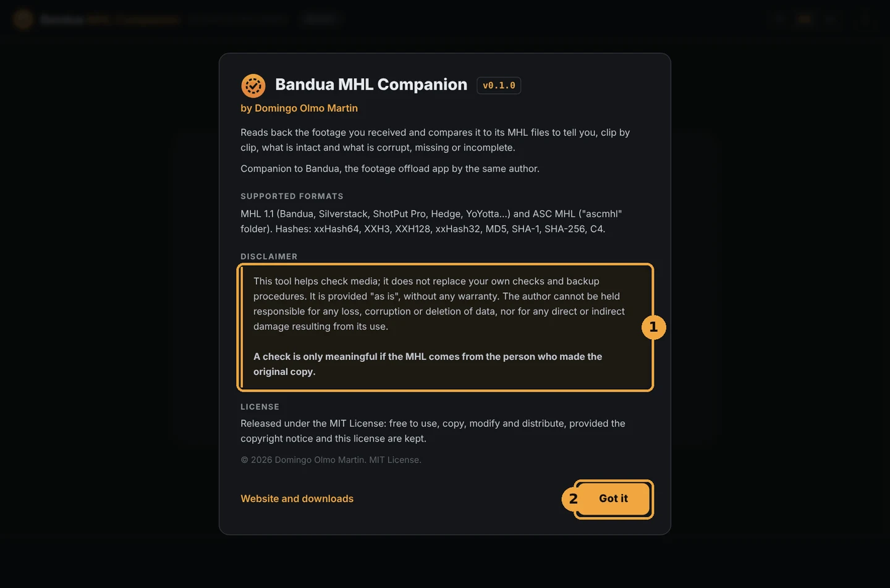
3. Choosing the footage
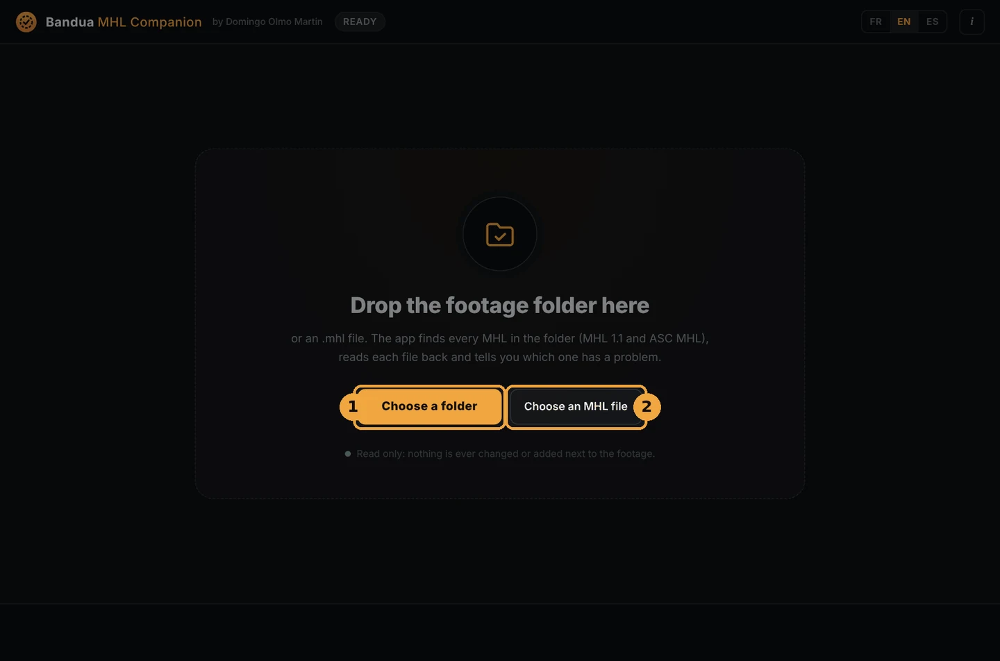
Three ways to begin:
drag the footage folder onto the window and drop it;
click Choose a folder (1);
or click Choose an MHL file (2) to check a single card only.
You can give it the folder of a whole day, or even a whole shoot: the app finds every MHL inside, across several days, cameras and cards at once.
If no MHL is found, the app says so. Ask the person who sent you the footage for the .mhl file, or the ascmhl folder.
4. Running the check
Footage: the chosen folder, with its number of files and total size. Change lets you pick another one.
MHL files found: one card per MHL, with its format (MHL 1.1 or ASC MHL), its name, its location in the folder, the number of files, the size, the hash algorithm, the software that wrote it and, for an ASC MHL, its number of generations.
The message at the bottom sums up the job. Click Start the check.
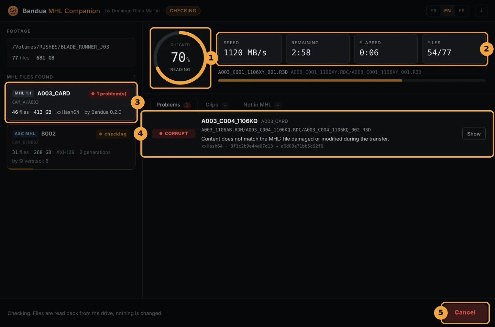
During the check:
the ring shows how much of the footage has been read back;
the counters give the speed, the time remaining, the time elapsed and the number of files read;
each MHL card shows its state: waiting, checking, intact or its number of problems;
problems appear as they are found, without waiting for the end;
the button becomes Cancel. Click it, then Confirm cancel within three seconds. A cancelled check gives an incomplete result.
Every file is read back from the drive, with the system cache bypassed, so the check really covers what is written on the drive. The time mostly depends on the drive speed: count the time of a full read of the footage.
5. Reading the result
All good
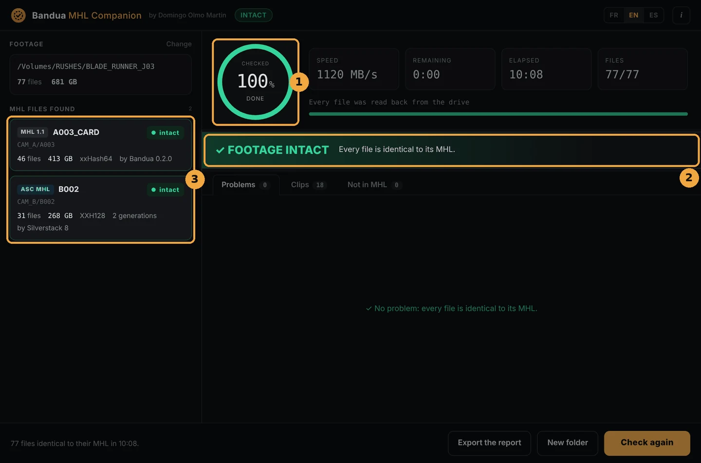
The ring turns green and reads done.
The ✓ FOOTAGE INTACT banner confirms that every file matches its MHL.
Each MHL card reads intact.
There are problems
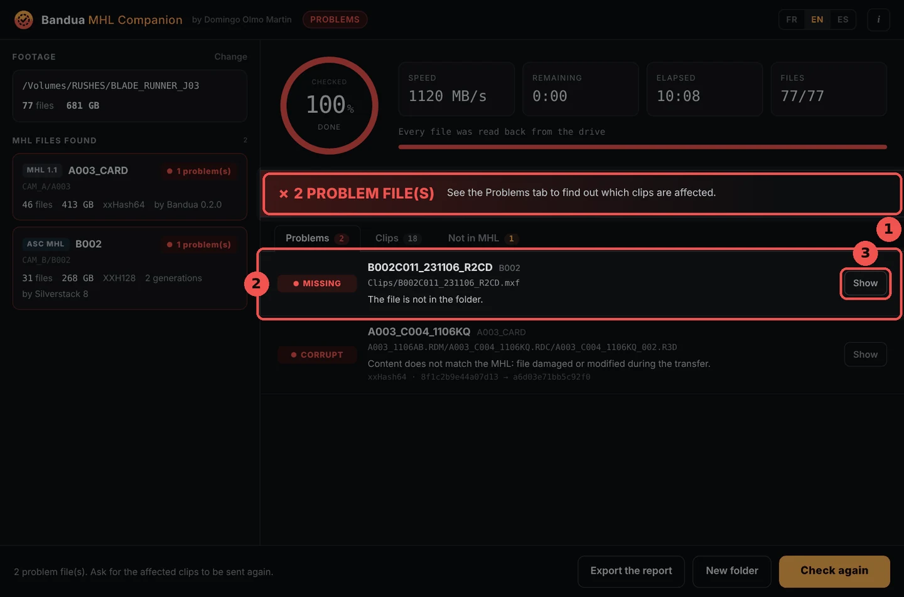
The red banner gives the number of problem files.
The Problems tab lists each file at fault: its status (CORRUPT, MISSING…), the name of the clip it belongs to, the MHL concerned, its path and an explanation. For a corrupt file, both fingerprints (expected and read) are shown.
The Show button opens the file's folder in Explorer or Finder.
The most useful thing for what comes next is the clip name: that is what you will ask to have sent again.
The other tabs
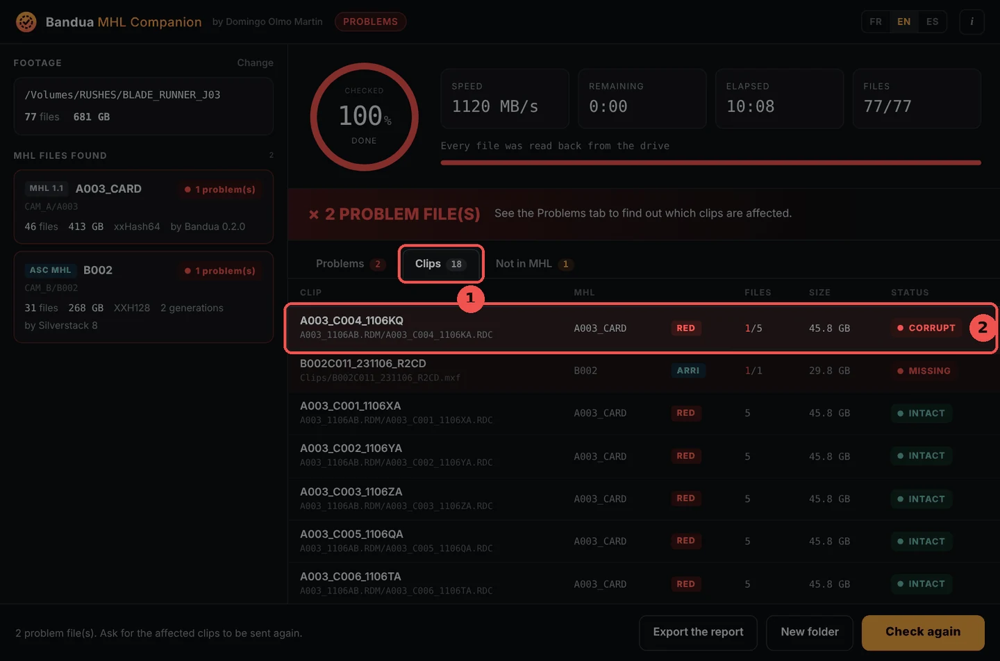
The Clips tab (1) shows every clip, with its MHL, its brand (RED, ARRI, Blackmagic, Sony, Canon, GoPro, DJI), its number of files, its size and its status. Clips with problems are listed first (2). A RED .RDC folder counts as one clip, as does an ARRIRAW sequence or a .braw.
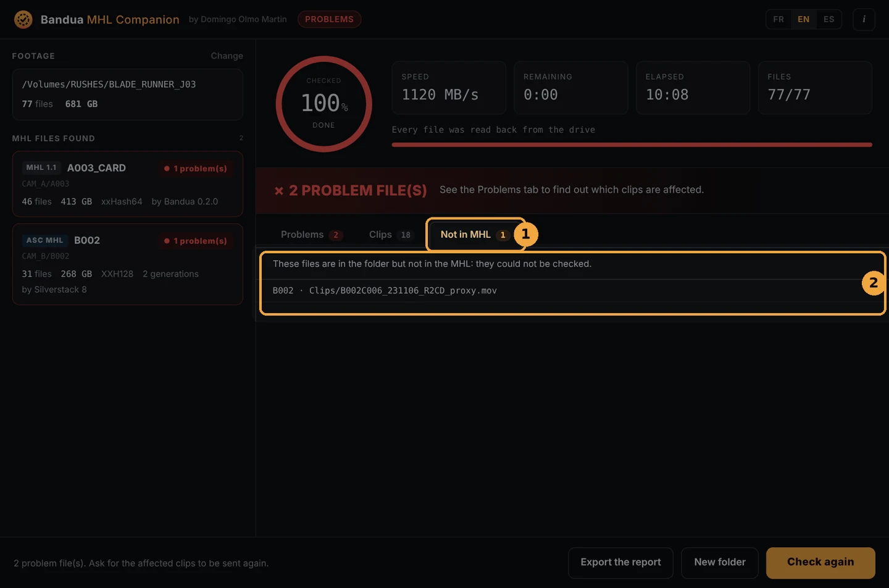
The Not in MHL tab (1) lists the files that are in the folder but in no MHL (2), for example proxies added later. They could not be checked, since the MHL says nothing about them. It is not necessarily a problem, but it is worth knowing.
6. Exporting the report
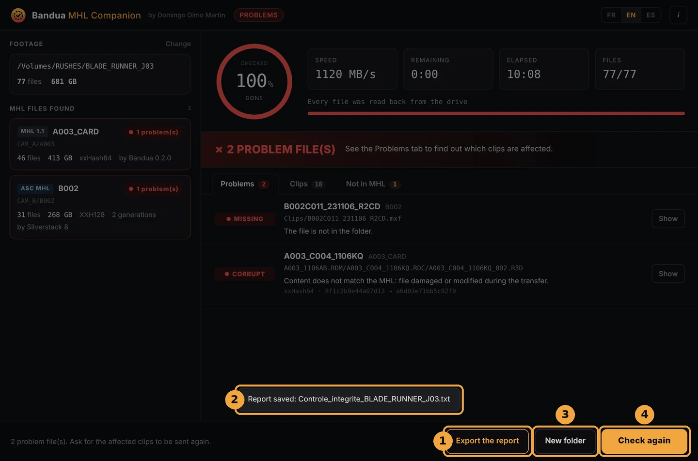
Export the report saves a text file wherever you choose, for example Integrity_check_BLADE_RUNNER_J03_2026-11-10_1432.txt. It lists the MHL files checked, every problem with its clip, and the files not in any MHL. This is the file you send back to the production or the DIT.
A message confirms the file was saved.
New folder goes back to the start screen.
Check again runs the check again on the same folder, for example after copying a clip again.
The report is the only file the app writes, and only where you decide.
7. Statuses in detail
Status
Meaning
What to do
INTACT
The file matches the MHL.
Nothing.
CORRUPT
Same size, different content: the file was damaged or modified during the transfer.
Ask for the clip again.
MISSING
The file is listed in the MHL but is not in the folder.
Check the copy, ask for the clip again.
INCOMPLETE
The size differs from the MHL, often an interrupted copy.
Copy the file again, then check again.
UNREADABLE
The drive could not read the file.
Check the drive and cable, try another computer.
NO HASH
The MHL gives no fingerprint for this file: only its size was checked.
Ask for a complete MHL if it matters.
If an ASC MHL history was modified after it was written, the MHL card says so: "ASC MHL history modified after it was written". Be wary of that MHL and ask for a new one.
ASC MHL (ascmhl folder): all generations are merged, and the ascmhl_chain.xml file is used to spot a history modified after the fact.
Hash: xxHash64, XXH3, XXH128, xxHash32, MD5, SHA-1, SHA-256, C4. When an MHL gives several, the fastest one is used.
Clips recognised: RED (.RDC folders), ARRI (MXF and ARRIRAW sequences), Blackmagic (BRAW), Sony, Canon, GoPro, DJI, and common video files.
9. Good practice
Check on arrival, before you start working and before the camera team formats the cards.
Keep the original drive until the check is done and your own copies are made.
An MHL is only worth something if it comes from the person who made the original copy, ideally sent separately from the footage (by email, for example). An MHL made afterwards on files that are already damaged would call them intact.
Check your own copies too: after copying the footage to your editing drive, run the check again on the copy.
Export the report and keep it with the project.
10. FAQ
Do I need Bandua to use the app?
No. It reads Bandua's MHL files, and those of other tools as well.
Does the app change my files?
No, never. It only reads. The only file it writes is the report, when you export it.
Why does the check take so long?
Every file is read back in full, from the drive. The time depends on the drive speed and the amount of footage.
A file is CORRUPT but the video plays fine. Does it matter?
Yes, report it. The file is no longer the one that was shot: the error may be on a frame you have not seen yet, or in the metadata.
Is there a command-line version?
Yes, for scripts: bandua-mhl-check <folder|file.mhl> [--lang fr|en|es] [--report report.txt]. Exit code: 0 everything is intact, 1 problems found, 2 no MHL found.
Does the app send data over the Internet?
No. Everything happens on your computer.
11. Disclaimer and license
This tool helps you check media. It does not replace your own checks or backup procedures. It is provided "as is", without any warranty. The author cannot be held responsible for any loss, corruption or deletion of data, nor for any direct or indirect damage resulting from its use.
A check is only meaningful if the MHL comes from the person who made the original copy.
Tu viens de recevoir des rushes, sur un disque ou par téléchargement. Quelque chose s'est-il abîmé en route ? Bandua MHL Companion relit chaque fichier, le compare au fichier MHL qui l'accompagne et te dit, clip par clip, ce qui est intact et ce qui ne l'est pas.
Un MHL est la liste des fichiers d'une copie, avec leur taille et leur empreinte (hash), écrite par le logiciel qui a déchargé les cartes sur le plateau. Si un fichier change, même d'un seul octet, son empreinte change : c'est ce que l'app vérifie.
L'app s'adresse à ceux qui reçoivent les rushes : monteur, assistant de montage, labo, post-production, production, réalisateur. Elle est le compagnon de Bandua, l'app de déchargement du même auteur, mais elle lit aussi les MHL écrits par Silverstack, ShotPut Pro, Hedge et les autres.
Elle est en lecture seule : elle ne modifie, ne renomme et n'ajoute jamais rien à côté de tes rushes. Gratuite, open source (licence MIT), sans compte.
2. Installation
Télécharger
Va sur la page des Releases et choisis le fichier pour ton ordinateur :
Système
Fichier
Windows, sans installation
Bandua_MHL_Companion_x.y.z_portable.exe
Windows, avec installeur
Bandua.MHL.Companion_x.y.z_x64-setup.exe ou .msi
macOS (Intel et Apple Silicon)
Bandua.MHL.Companion_x.y.z_universal.dmg
Premier lancement
L'app n'est pas encore signée. Ton système affiche donc un avertissement, une seule fois :
Windows : clique sur « Informations complémentaires », puis sur « Exécuter quand même ».
macOS : fais un clic droit sur l'app, choisis « Ouvrir », puis confirme.
Fenêtre de bienvenue
Au premier lancement, l'app présente ce qu'elle fait, les formats reconnus et un avertissement (1). Lis-le, puis clique sur J'ai compris (2). Tu le retrouveras dans À propos (le bouton i, en haut à droite). Les boutons FR / EN / ES changent la langue à tout moment.
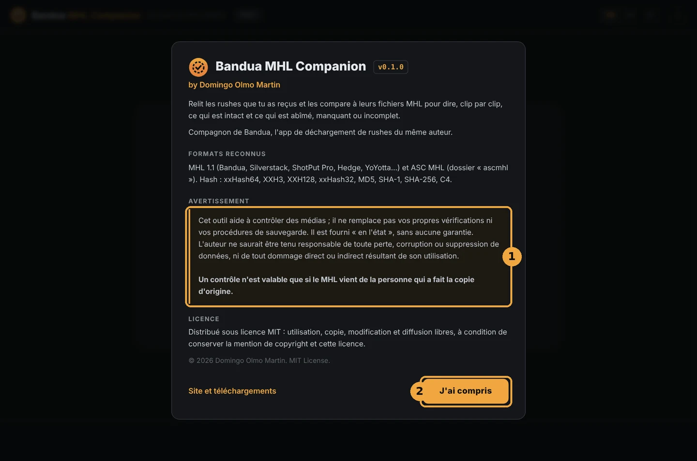
3. Choisir les rushes
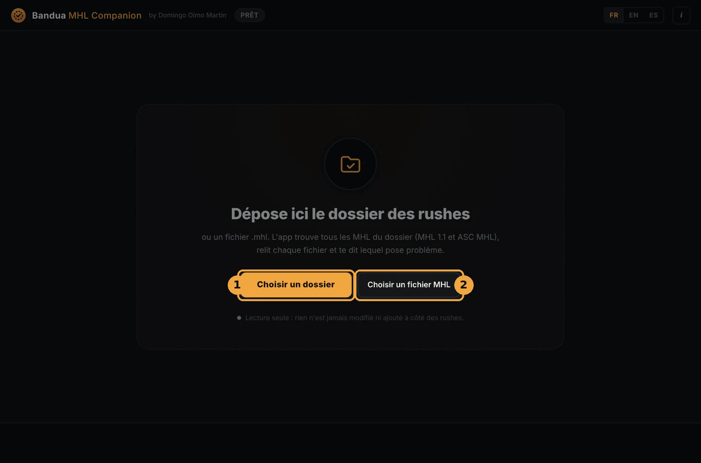
Trois façons de commencer :
Glisse le dossier des rushes sur la fenêtre et relâche-le ;
clique sur Choisir un dossier (1) ;
ou clique sur Choisir un fichier MHL (2) pour ne contrôler qu'une seule carte.
Tu peux donner le dossier de toute une journée, voire de tout un tournage : l'app cherche tous les MHL qu'il contient, sur plusieurs jours, caméras et cartes à la fois.
Si aucun MHL n'est trouvé, l'app te le dit. Demande alors à la personne qui t'a envoyé les rushes le fichier .mhl, ou le dossier ascmhl.
4. Lancer le contrôle
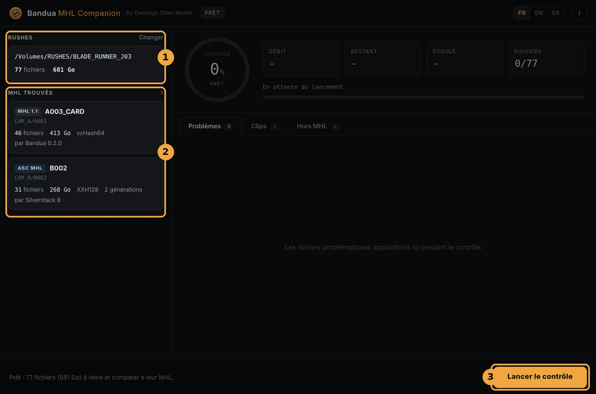
Rushes : le dossier choisi, avec le nombre de fichiers et la taille totale. Changer permet d'en choisir un autre.
MHL trouvés : une fiche par MHL, avec son format (MHL 1.1 ou ASC MHL), son nom, son emplacement dans le dossier, le nombre de fichiers, la taille, l'algorithme de hash, le logiciel qui l'a écrit et, pour un ASC MHL, son nombre de générations.
Le message du bas résume le travail. Clique sur Lancer le contrôle.
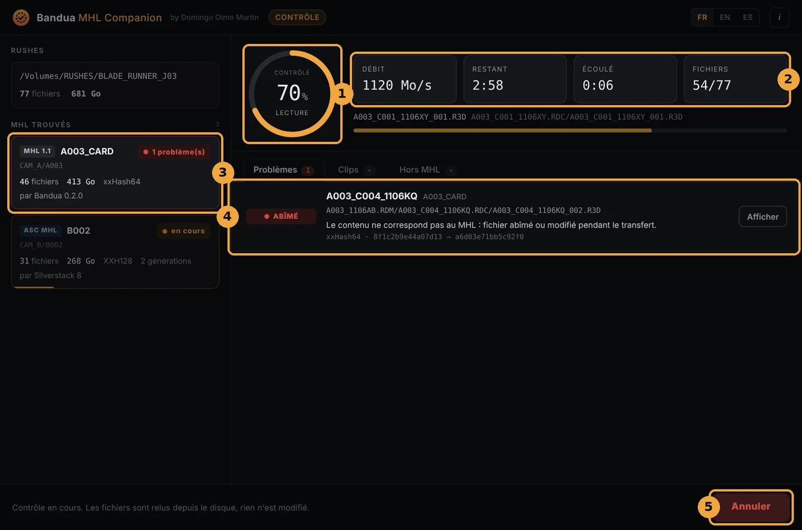
Pendant le contrôle :
le cercle montre la part des rushes déjà relue ;
les compteurs donnent le débit, le temps restant, le temps écoulé et le nombre de fichiers relus ;
chaque fiche MHL affiche son état : en attente, en cours, intact ou le nombre de problèmes ;
les problèmes s'affichent au fur et à mesure, sans attendre la fin ;
le bouton devient Annuler. Clique dessus, puis sur Confirmer l'annulation dans les trois secondes. Un contrôle interrompu donne un résultat incomplet.
Chaque fichier est relu depuis le disque, en contournant le cache du système. Le contrôle porte donc vraiment sur ce qui est écrit sur le disque. Le temps dépend surtout de la vitesse du disque : compte la durée d'une lecture complète des rushes.
5. Lire le résultat
Tout est bon
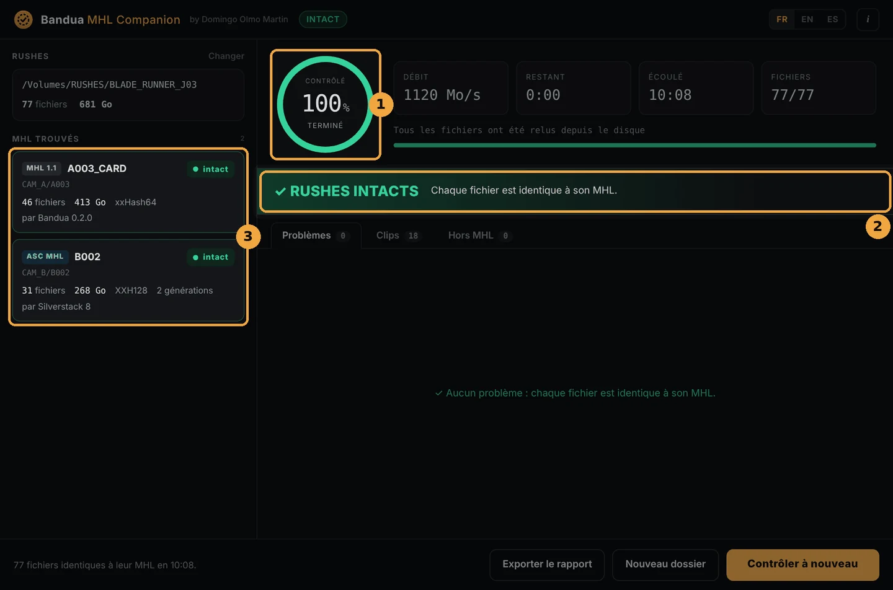
Le cercle passe au vert, avec la mention terminé.
Le bandeau ✓ RUSHES INTACTS confirme que chaque fichier est identique à son MHL.
Chaque fiche MHL indique intact.
Il y a des problèmes
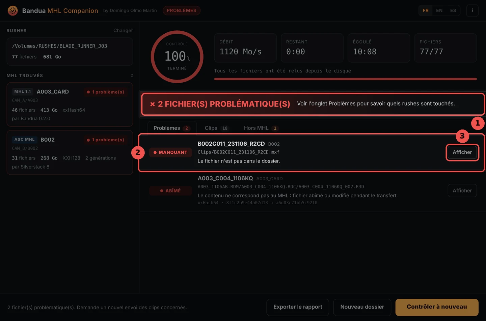
Le bandeau rouge indique le nombre de fichiers problématiques.
L'onglet Problèmes liste chaque fichier en cause : son statut (ABÎMÉ, MANQUANT…), le nom du clip auquel il appartient, le MHL concerné, son chemin et une explication. Pour un fichier abîmé, les deux empreintes (attendue et lue) sont affichées.
Le bouton Afficher ouvre le dossier du fichier dans l'Explorateur ou le Finder.
Le plus utile pour la suite : le nom du clip. C'est lui que tu demanderas à renvoyer.
Les autres onglets
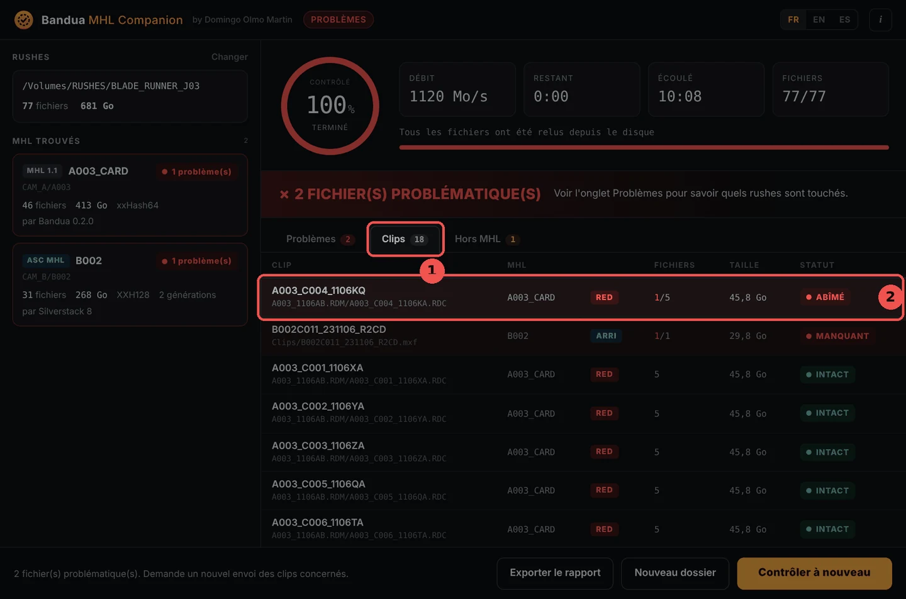
L'onglet Clips (1) montre tous les clips, avec leur MHL, leur marque (RED, ARRI, Blackmagic, Sony, Canon, GoPro, DJI), leur nombre de fichiers, leur taille et leur statut. Les clips en cause sont en tête de liste (2). Un dossier .RDC RED compte pour un clip, tout comme une séquence ARRIRAW ou un .braw.
L'onglet Hors MHL (1) liste les fichiers présents dans le dossier mais absents de tout MHL (2), par exemple des proxys ajoutés après coup. Ils n'ont pas pu être contrôlés, puisque le MHL ne dit rien d'eux. Ce n'est pas forcément un problème, mais il vaut mieux le savoir.
6. Exporter le rapport
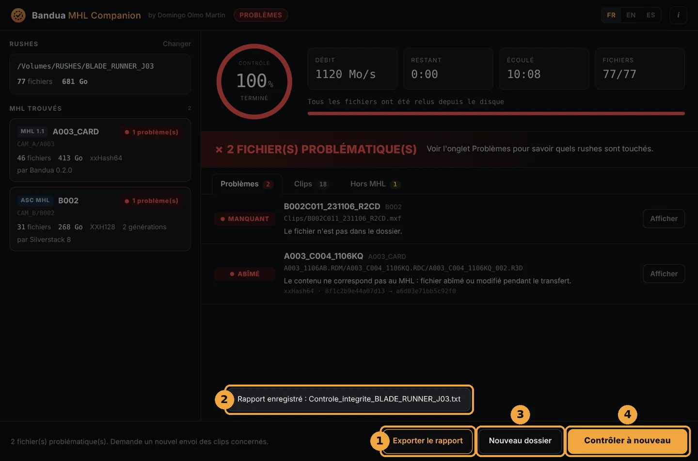
Exporter le rapport enregistre un fichier texte à l'endroit de ton choix, par exemple Controle_integrite_BLADE_RUNNER_J03_2026-11-10_1432.txt. Il liste les MHL contrôlés, chaque problème avec son clip, et les fichiers hors MHL. C'est ce fichier que tu renvoies à la production ou au DIT.
Un message confirme l'enregistrement.
Nouveau dossier revient à l'écran d'accueil.
Contrôler à nouveau relance le contrôle sur le même dossier, par exemple après avoir recopié un clip.
Le rapport est le seul fichier que l'app écrit, et seulement là où tu le décides.
7. Les statuts en détail
Statut
Signification
Que faire
INTACT
Le fichier est identique au MHL.
Rien.
ABÎMÉ
Même taille, contenu différent : le fichier a été abîmé ou modifié pendant le transfert.
Redemander le clip.
MANQUANT
Le fichier est listé dans le MHL mais absent du dossier.
Vérifier la copie, redemander le clip.
INCOMPLET
Taille différente de celle du MHL, souvent une copie interrompue.
Recopier le fichier, puis contrôler à nouveau.
ILLISIBLE
Le disque n'a pas pu lire le fichier.
Vérifier le disque et le câble, essayer sur un autre ordinateur.
SANS HASH
Le MHL ne donne pas d'empreinte pour ce fichier : seule sa taille a été vérifiée.
Demander un MHL complet si c'est important.
Si un historique ASC MHL a été modifié après sa création, la fiche du MHL l'indique : « Historique ASC MHL modifié après sa création ». Méfie-toi alors de ce MHL et demande-en un nouveau.
ASC MHL (dossier ascmhl) : toutes les générations sont fusionnées, et le fichier ascmhl_chain.xml sert à repérer un historique modifié après coup.
Hash : xxHash64, XXH3, XXH128, xxHash32, MD5, SHA-1, SHA-256, C4. Si un MHL en donne plusieurs, le plus rapide est utilisé.
Clips reconnus : RED (dossiers .RDC), ARRI (MXF et séquences ARRIRAW), Blackmagic (BRAW), Sony, Canon, GoPro, DJI, et les fichiers vidéo courants.
9. Bonnes pratiques
Contrôle dès réception, avant de commencer à travailler et avant que l'équipe de tournage ne formate les cartes.
Garde le disque d'origine tant que le contrôle n'est pas terminé et que tes propres copies ne sont pas faites.
Un MHL n'a de valeur que s'il vient de la personne qui a fait la copie d'origine, idéalement envoyé à part des rushes (par e-mail, par exemple). Un MHL refait après coup sur des fichiers déjà abîmés les déclarerait intacts.
Contrôle aussi tes propres copies : après avoir copié les rushes sur ton disque de montage, relance le contrôle sur la copie.
Exporte le rapport et garde-le avec le projet.
10. Questions fréquentes
Faut-il avoir Bandua pour utiliser l'app ?
Non. Elle lit les MHL de Bandua, mais aussi ceux des autres logiciels.
L'app modifie-t-elle mes fichiers ?
Non, jamais. Elle ne fait que lire. Le seul fichier écrit est le rapport, quand tu l'exportes.
Pourquoi le contrôle est-il aussi long ?
Chaque fichier est relu en entier, depuis le disque. La durée dépend de la vitesse du disque et de la quantité de rushes.
Un fichier est ABÎMÉ, mais la vidéo se lit bien. C'est grave ?
Oui, il faut le signaler. Le fichier n'est plus celui qui a été tourné : l'erreur peut se trouver sur une image que tu n'as pas encore vue, ou dans les métadonnées.
Existe-t-il une version en ligne de commande ?
Oui, pour les scripts : bandua-mhl-check <dossier|fichier.mhl> [--lang fr|en|es] [--report rapport.txt]. Code de sortie : 0 tout est intact, 1 problèmes trouvés, 2 aucun MHL trouvé.
L'app envoie-t-elle des données sur Internet ?
Non. Tout se passe sur ton ordinateur.
11. Avertissement et licence
Cet outil aide à contrôler des médias. Il ne remplace pas tes propres vérifications ni tes procédures de sauvegarde. Il est fourni « en l'état », sans aucune garantie. L'auteur ne saurait être tenu responsable de toute perte, corruption ou suppression de données, ni de tout dommage direct ou indirect résultant de son utilisation.
Un contrôle n'est valable que si le MHL vient de la personne qui a fait la copie d'origine.
Acabas de recibir material, en un disco o por descarga. ¿Se ha dañado algo por el camino? Bandua MHL Companion vuelve a leer cada archivo, lo compara con el archivo MHL que lo acompaña y te dice, clip por clip, qué está intacto y qué no.
Un MHL es la lista de los archivos de una copia, con su tamaño y su huella (hash), escrita por el programa que volcó las tarjetas en el rodaje. Si un archivo cambia, aunque sea un solo byte, su huella cambia: eso es lo que comprueba la app.
La app está pensada para quien recibe el material: montador, ayudante de montaje, laboratorio, postproducción, producción, director. Es la compañera de Bandua, la app de volcado del mismo autor, pero también lee los MHL escritos por Silverstack, ShotPut Pro, Hedge y otros.
Funciona en solo lectura: nunca modifica, renombra ni añade nada junto a tu material. Gratuita, de código abierto (licencia MIT), sin cuenta.
La app aún no está firmada, así que tu sistema muestra un aviso, una sola vez:
Windows: haz clic en «Más información» y luego en «Ejecutar de todas formas».
macOS: haz clic derecho en la app, elige «Abrir» y confirma.
Ventana de bienvenida
En el primer arranque, la app presenta lo que hace, los formatos reconocidos y un aviso (1). Léelo y haz clic en Entendido (2). Lo encontrarás en Acerca de (el botón i, arriba a la derecha). Los botones FR / EN / ES cambian el idioma en cualquier momento.
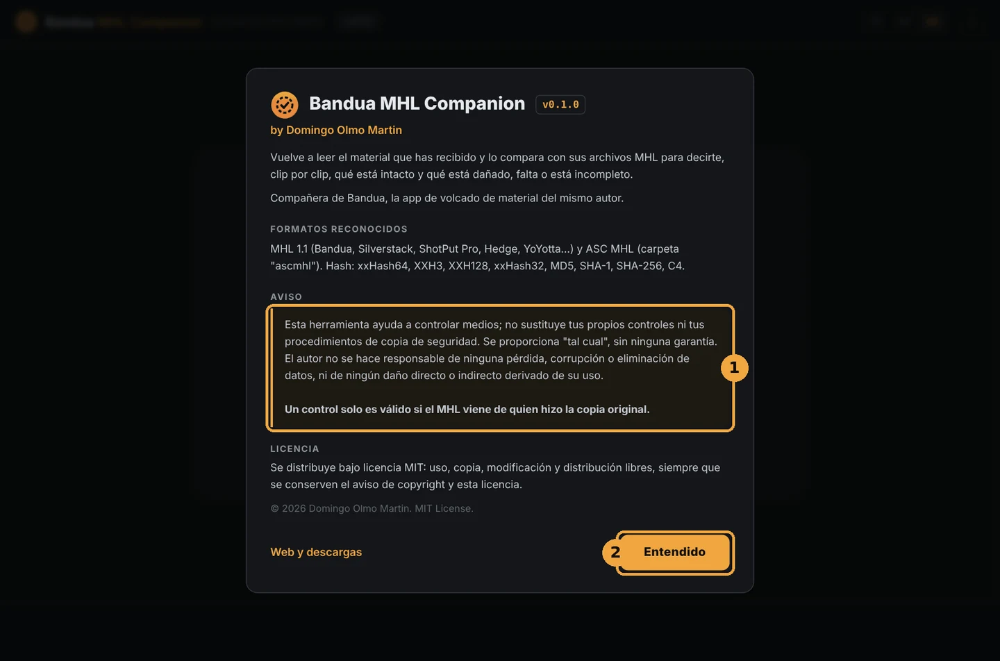
3. Elegir el material
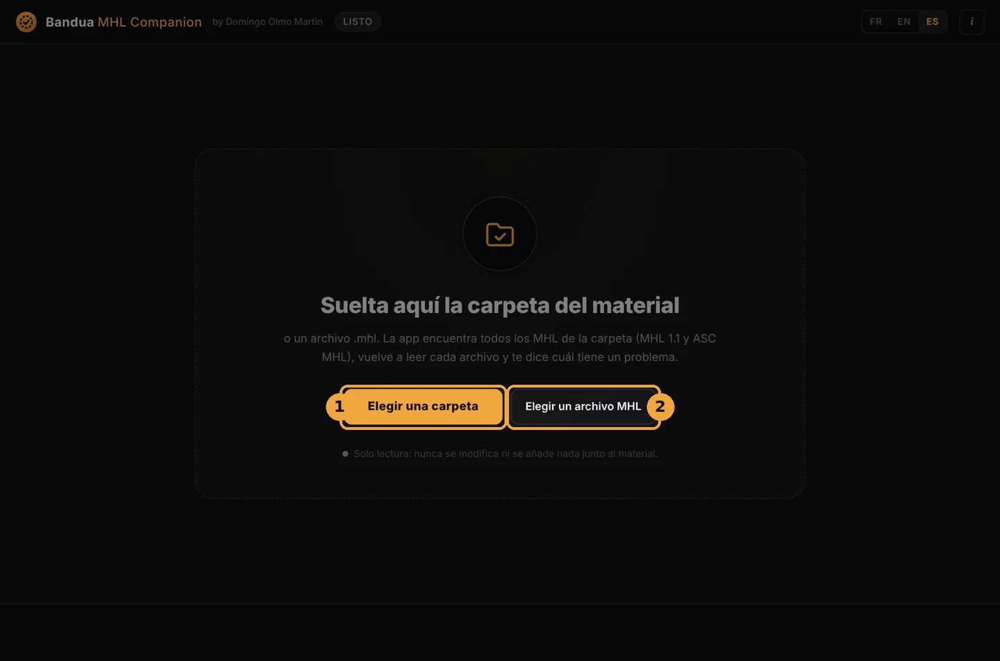
Tres formas de empezar:
arrastra la carpeta del material a la ventana y suéltala;
haz clic en Elegir una carpeta (1);
o haz clic en Elegir un archivo MHL (2) para controlar una sola tarjeta.
Puedes darle la carpeta de un día entero, o incluso de todo un rodaje: la app encuentra todos los MHL que contiene, de varios días, cámaras y tarjetas a la vez.
Si no encuentra ningún MHL, te lo dice. Pide entonces a quien te envió el material el archivo .mhl, o la carpeta ascmhl.
4. Iniciar el control
Material: la carpeta elegida, con su número de archivos y su tamaño total. Cambiar permite elegir otra.
MHL encontrados: una ficha por MHL, con su formato (MHL 1.1 o ASC MHL), su nombre, su ubicación en la carpeta, el número de archivos, el tamaño, el algoritmo de hash, el programa que lo escribió y, para un ASC MHL, su número de generaciones.
El mensaje de abajo resume el trabajo. Haz clic en Iniciar el control.
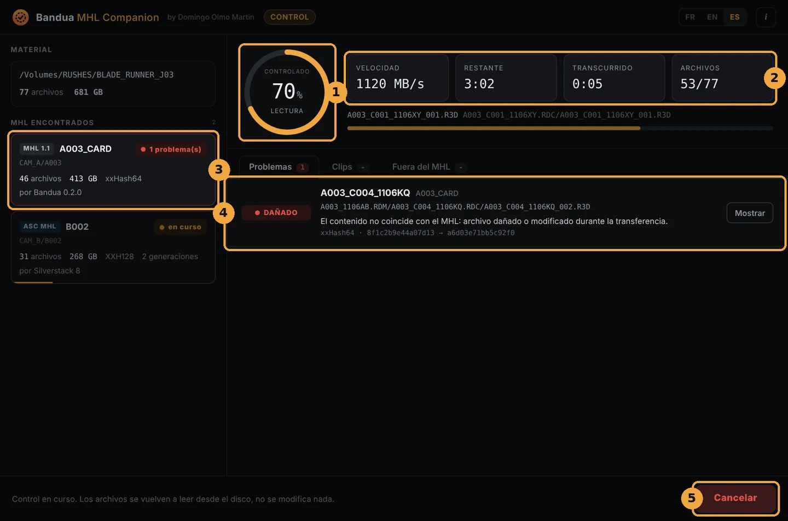
Durante el control:
el círculo muestra la parte del material ya releída;
los contadores dan la velocidad, el tiempo restante, el tiempo transcurrido y el número de archivos leídos;
cada ficha MHL muestra su estado: en espera, en curso, intacto o su número de problemas;
los problemas aparecen a medida que se encuentran, sin esperar al final;
el botón pasa a Cancelar. Haz clic en él y luego en Confirmar la cancelación antes de tres segundos. Un control interrumpido da un resultado incompleto.
Cada archivo se relee desde el disco, evitando la caché del sistema, así que el control cubre de verdad lo que está escrito en el disco. El tiempo depende sobre todo de la velocidad del disco: cuenta lo que dura una lectura completa del material.
5. Leer el resultado
Todo está bien
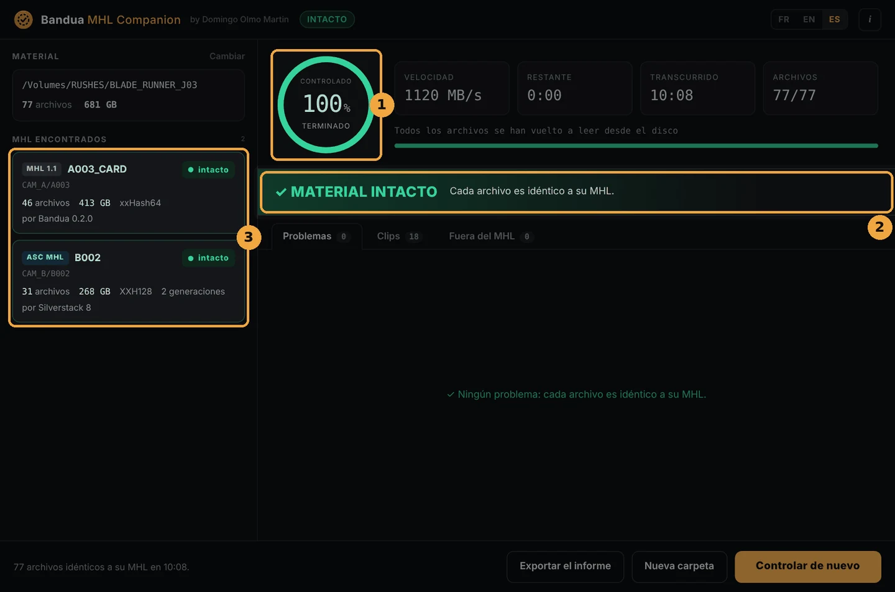
El círculo pasa a verde, con la palabra terminado.
La franja ✓ MATERIAL INTACTO confirma que cada archivo es idéntico a su MHL.
Cada ficha MHL indica intacto.
Hay problemas
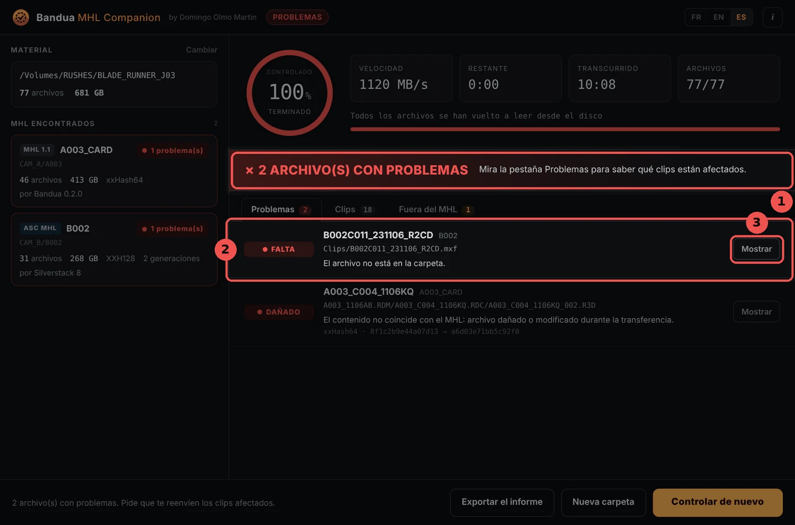
La franja roja indica el número de archivos con problemas.
La pestaña Problemas lista cada archivo afectado: su estado (DAÑADO, FALTA…), el nombre del clip al que pertenece, el MHL correspondiente, su ruta y una explicación. Para un archivo dañado, se muestran las dos huellas (la esperada y la leída).
El botón Mostrar abre la carpeta del archivo en el Explorador o en el Finder.
Lo más útil para lo que sigue es el nombre del clip: es lo que pedirás que te vuelvan a enviar.
Las otras pestañas
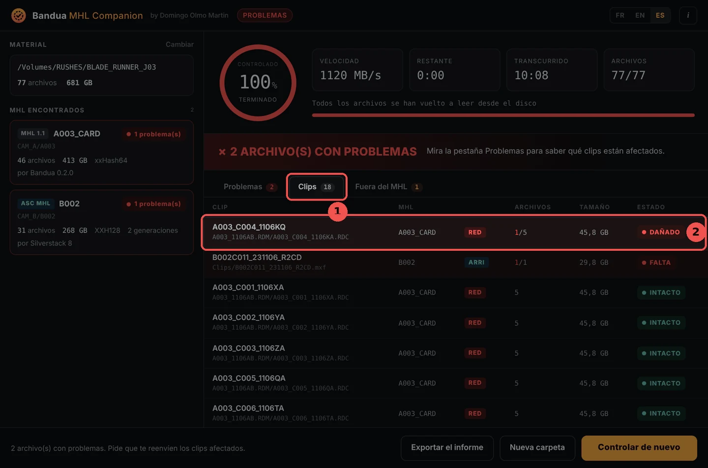
La pestaña Clips (1) muestra todos los clips, con su MHL, su marca (RED, ARRI, Blackmagic, Sony, Canon, GoPro, DJI), su número de archivos, su tamaño y su estado. Los clips con problemas aparecen primero (2). Una carpeta .RDC de RED cuenta como un clip, igual que una secuencia ARRIRAW o un .braw.
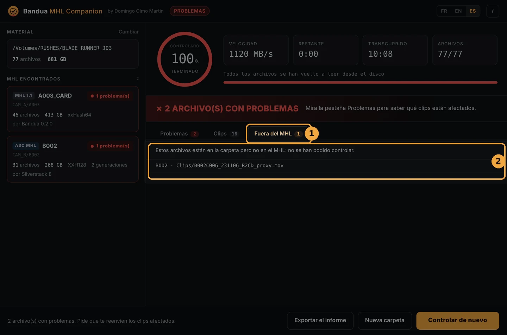
La pestaña Fuera del MHL (1) lista los archivos que están en la carpeta pero en ningún MHL (2), por ejemplo proxies añadidos después. No se han podido controlar, porque el MHL no dice nada de ellos. No es necesariamente un problema, pero conviene saberlo.
6. Exportar el informe
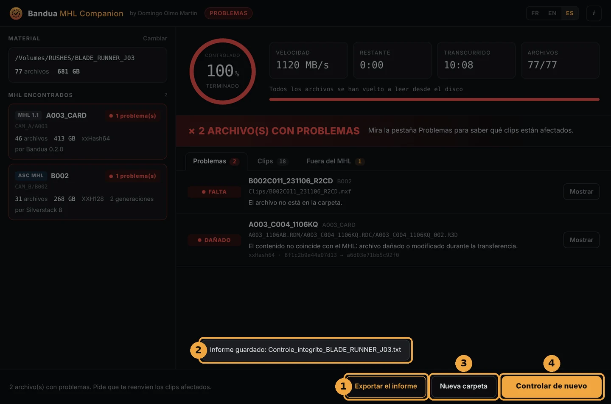
Exportar el informe guarda un archivo de texto donde tú elijas, por ejemplo Control_integridad_BLADE_RUNNER_J03_2026-11-10_1432.txt. Lista los MHL controlados, cada problema con su clip y los archivos fuera del MHL. Es el archivo que envías a producción o al DIT.
Un mensaje confirma que se ha guardado.
Nueva carpeta vuelve a la pantalla de inicio.
Controlar de nuevo vuelve a lanzar el control sobre la misma carpeta, por ejemplo después de copiar de nuevo un clip.
El informe es el único archivo que escribe la app, y solo donde tú decidas.
7. Los estados en detalle
Estado
Significado
Qué hacer
INTACTO
El archivo es idéntico al MHL.
Nada.
DAÑADO
Mismo tamaño, contenido distinto: el archivo se dañó o se modificó durante la transferencia.
Volver a pedir el clip.
FALTA
El archivo figura en el MHL pero no está en la carpeta.
Revisar la copia, volver a pedir el clip.
INCOMPLETO
Tamaño distinto del del MHL, a menudo una copia interrumpida.
Volver a copiar el archivo y controlar de nuevo.
ILEGIBLE
El disco no ha podido leer el archivo.
Revisar el disco y el cable, probar en otro ordenador.
SIN HASH
El MHL no da huella para este archivo: solo se ha comprobado su tamaño.
Pedir un MHL completo si es importante.
Si un historial ASC MHL se modificó después de crearse, la ficha del MHL lo indica: «Historial ASC MHL modificado después de crearse». Desconfía de ese MHL y pide uno nuevo.
ASC MHL (carpeta ascmhl): se combinan todas las generaciones, y el archivo ascmhl_chain.xml sirve para detectar un historial modificado a posteriori.
Hash: xxHash64, XXH3, XXH128, xxHash32, MD5, SHA-1, SHA-256, C4. Si un MHL da varios, se usa el más rápido.
Clips reconocidos: RED (carpetas .RDC), ARRI (MXF y secuencias ARRIRAW), Blackmagic (BRAW), Sony, Canon, GoPro, DJI, y los archivos de vídeo habituales.
9. Buenas prácticas
Controla al recibir, antes de empezar a trabajar y antes de que el equipo de rodaje formatee las tarjetas.
Conserva el disco original hasta que termine el control y tengas tus propias copias.
Un MHL solo vale si viene de quien hizo la copia original, idealmente enviado aparte del material (por correo, por ejemplo). Un MHL hecho después sobre archivos ya dañados los daría por intactos.
Controla también tus propias copias: después de copiar el material en tu disco de montaje, vuelve a lanzar el control sobre la copia.
Exporta el informe y guárdalo con el proyecto.
10. Preguntas frecuentes
¿Hace falta Bandua para usar la app?
No. Lee los MHL de Bandua, pero también los de otros programas.
¿La app modifica mis archivos?
No, nunca. Solo lee. El único archivo que escribe es el informe, cuando lo exportas.
¿Por qué tarda tanto el control?
Cada archivo se vuelve a leer entero, desde el disco. El tiempo depende de la velocidad del disco y de la cantidad de material.
Un archivo está DAÑADO, pero el vídeo se reproduce bien. ¿Es grave?
Sí, hay que avisar. El archivo ya no es el que se rodó: el error puede estar en una imagen que aún no has visto, o en los metadatos.
¿Existe una versión de línea de comandos?
Sí, para scripts: bandua-mhl-check <carpeta|archivo.mhl> [--lang fr|en|es] [--report informe.txt]. Código de salida: 0 todo está intacto, 1 se han encontrado problemas, 2 no hay ningún MHL.
¿La app envía datos por Internet?
No. Todo ocurre en tu ordenador.
11. Aviso y licencia
Esta herramienta ayuda a controlar medios. No sustituye tus propias comprobaciones ni tus procedimientos de copia de seguridad. Se ofrece «tal cual», sin ninguna garantía. El autor no se hace responsable de ninguna pérdida, corrupción o eliminación de datos, ni de ningún daño directo o indirecto derivado de su uso.
Un control solo es válido si el MHL viene de quien hizo la copia original.